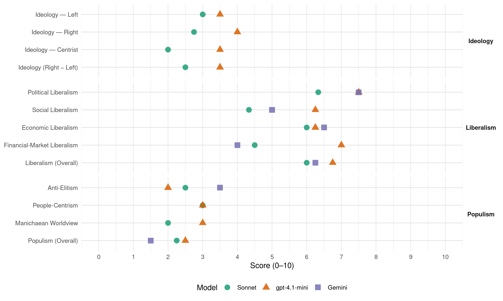

RPF (Netherlands, 1994)
manifesto_id 22528_199405
Get full text: This site shows derived annotations and short verbatim quotes only. The full manifesto text is © Manifesto Project / WZB — obtain it via manifesto-project.wzb.eu using the manifesto_id above.
Headline scores
| Dimension | Sonnet | gpt-4.1-mini | Gemini |
|---|---|---|---|
| Populism (Overall) | 2.2 | 2.5 | 1.5 |
| Anti-Elitism | 2.5 | 2.0 | 3.5 |
| People-Centrism | 3.0 | 3.0 | – |
| Manichaean Worldview | 2.0 | 3.0 | – |
| Ideology (Right − Left) | 2.5 | 3.5 | – |
| Liberalism (Overall) | 6.0 | 6.8 | 6.2 |
| Political Liberalism | 6.3 | 7.5 | 7.5 |
| Social Liberalism | 4.3 | 6.2 | 5.0 |
| Economic Liberalism | 6.0 | 6.2 | 6.5 |
| Financial-Market Liberalism | 4.5 | 7.0 | 4.0 |
Evidence per dimension
Economic Liberalism
Gemini · score 6.0 · verified · chunk 1
“overgelaten aan het bedrijfsleven”
oneigenlijke taken worden afgestoten en overgelaten aan het bedrijfsleven en de burgers zelf
Gemini · score 5.0 · mixed · chunk 2
“Marktwerking en een open economie zijn uitgangspunten”
te geringe aandacht voor scholing in het bedrijfsleven, infrastructuur en kwaliteit van de produktie. Marktwerking en een open economie zijn uitgangspunten, maar sluiten bepaald niet uit dat de overheid
Gemini · score 6.0 · mixed · chunk 3
“krachten van de vrije markt in goede banen te leiden”
begeleide economie’, waarin aan de overheid de verantwoordelijkheid wordt toegekend om de krachten van de vrije markt in goede banen te leiden. Daarmee staat de RPF in een traditie
Gemini · score 7.0 · verified · chunk 4
“overgang naar de markteconomie te vergemakkelijken”
verleent Nederlandse regering hulp aan Oosteuropese landen om de overgang naar de markteconomie te vergemakkelijken. De armste Oosteuropese landen
gpt-4.1-mini · score 5.0 · verified · chunk 1
“de overheid kan zich richten op haar echte taken en minder bemoeienis”
Dit zal resulteren in enerzijds een kleinere overheid, die minder dan nu het geval is zich al sturend, organiserend en financierend (subsidies!) met allerhande zaken bemoeit, en anderzijds aanzienlijk meer keuzevrijheid voor de burgers: er wordt veel minder (belasting)geld via de overheid herverdeeld, waardoor de burgers zelf meer ruimte krijgen voor het maken van keuzes in de besteding van hun geld.
gpt-4.1-mini · score 7.0 · verified · chunk 2
“marktwerking, open economie, concurrentie, belastinghervorming, deregulering”
…marktwerking en een open economie zijn uitgangspunten, met aandacht voor concurrentie, belastinghervorming en deregulering…
gpt-4.1-mini · score 6.0 · verified · chunk 3
“de overheid de voorwaarden moet scheppen waardoor de burgers zélf de mogelijkheid krijgen zich te ontplooien”
In een christelijk-sociale benadering komt het erop aan de overheidsbemoeienis tot de juiste proporties terug te brengen. In algemene zin aangeduid betekent dit dat zij de voorwaarden moet scheppen waardoor de burgers zélf de mogelijkheid krijgen zich te ontplooien. Concreet: het bevorderen van de werkgelegenheid, het zorgen voor een adequaat stelsel van sociale voorzieningen voor hen die daarop werkelijk aangewezen zijn, het instandhouden van een goed onderwijsstelsel en het bieden van ruimte voor het culturele leven in brede zin.
gpt-4.1-mini · score 7.0 · verified · chunk 4
“eerlijke prijzen worden betaald voor produkten uit ontwikkelingslanden”
Meer ‘geldhulp’ alleen is echter allerminst voldoende. Minstens zo belangrijk is dat er eerlijke prijzen worden betaald voor produkten uit ontwikkelingslanden. Daarnaast is effectiviteits- verbetering van de hulpverlening absoluut noodzakelijk.
Sonnet · score 5.0 · mixed · chunk 1
“kleinere overheid, die minder dan nu het geval is zich al sturend, organiserend en financierend”
Dit zal resulteren in enerzijds een kleinere overheid, die minder dan nu het geval is zich al sturend, organiserend en financierend (subsidies!) met allerhande zaken bemoeit, en anderzijds aanzienlijk meer keuzevrijheid voor de burgers
Sonnet · score 5.0 · mixed · chunk 2
“Marktwerking en een open economie zijn uitgangspunten”
Marktwerking en een open economie zijn uitgangspunten, maar sluiten bepaald niet uit dat de overheid regulerend kan optreden
Sonnet · score 5.0 · mixed · chunk 3
“krachten van de vrije markt”
de verantwoordelijkheid wordt toegekend om de krachten van de vrije markt in goede banen te leiden
Sonnet · score 6.0 · verified · chunk 4
“overgang naar de markteconomie te vergemakkelijken”
Samen met andere EU-lidstaten verleent Nederlandse regering hulp aan Oosteuropese landen om de overgang naar de markteconomie te vergemakkelijken. De armste Oosteuropese landen, zoals Albanië en Roemenie, verdienen de meeste aandacht.
Financial-Market Liberalism
Gemini · score 4.0 · verified · chunk 2
“concentratie in de financiële wereld (verzekeraars, banken)”
Er moet worden getoetst of en in hoeverre verdere concentratie in de financiële wereld (verzekeraars, banken) onaanvaardbare gevolgen heeft, met name het ontstaan
gpt-4.1-mini · score 7.0 · verified · chunk 2
“financiële markten, banken, kapitaal, investeringen, transparantie, prudentieel toezicht”
…toezicht op financiële markten, banken, kapitaalstromen, investeringen, transparantie en prudentieel toezicht…
Sonnet · score 5.0 · mixed · chunk 2
“concentratie in de financiële wereld”
Er moet worden getoetst of en in hoeverre verdere concentratie in de financiële wereld (verzekeraars, banken) onaanvaardbare gevolgen heeft
Sonnet · score 5.0 · verified · chunk 3
“Liberalisatie en deregulering van het huurbeleid”
Liberalisatie en deregulering van het huurbeleid vormen belangrijke instrumenten bij het streven van de rijksoverheid de marktwerking te versterken
Sonnet · score 4.0 · verified · chunk 4
“vorming van een Europese Monetaire Unie”
De vorming van een Europese Monetaire Unie, met onder andere één Europese centrale bank met centrale bevoegdheden en één Europese munt, wordt afgewezen. Ook in een EMU is de gulden als betaalmiddel bruikbaar.
Political Liberalism
Gemini · score 7.0 · verified · chunk 1
“regeringsvorm de parlementaire democratie”
constitutionele monarchie en ais regeringsvorm de parlementaire democratie. Met deze omschrijving
Gemini · score 7.0 · verified · chunk 2
“In een sociale rechtsstaat rust op de overheid”
aan onaanvaardbare tegenstellingen tussen bevolkingsgroepen. In een sociale rechtsstaat rust op de overheid de taak om door middel van een voorwaardenscheppend
Gemini · score 8.0 · verified · chunk 3
“persvrijheid is een groot goed”
hun taken in de samenleving vervullen. De persvrijheid is een groot goed en behoort in een democratische rechtsstaat het uitgang
Gemini · score 8.0 · verified · chunk 4
“democratie en een goed financieel beheer”
morele verplichting om - binnen het kader van het Raamverdrag - de Surinaamse regering steun te verlenen, mits de democratie en een goed financieel beheer worden gegarandeerd
gpt-4.1-mini · score 7.0 · verified · chunk 1
“Nederland is een soevereine staat, kent als staatsvorm de constitutionele monarchie”
Nederland is een soevereine staat, kent als staatsvorm de constitutionele monarchie en als regeringsvorm de parlementaire democratie. Met deze omschrijving, waarmee ons land staatkundig en politiek is getypeerd, hangen belangrijke kenmerken van ‘de staat der Nederlanden’ samen: de nationale soevereiniteit, de verbondenheid met het Huis van Oranje, de representatieve democratie op basis van het meerpartijenstelsel, verscheidenheid in godsdienstige, levensbeschouwelijke en politieke overtuigingen, en een grote mate van geestelijke vrijheid en tolerantie.
gpt-4.1-mini · score 8.0 · verified · chunk 2
“de democratie, rechten, verkiezingen, rechtbanken, media”
…moeten worden getoetst aan de normen die uit de publieke gerechtigheid voortvloeien voor het economische leven. Democratie, rechten, verkiezingen, rechtbanken, media…
gpt-4.1-mini · score 7.0 · verified · chunk 3
“De persvrijheid is een groot goed en behoort in een democratische rechtsstaat het uitgangspunt te zijn”
Een zelfde verantwoordelijkheid heeft de overheid waar het gaat om de wijze waarop de media - met name pers, radio en televisie - hun taken in de samenleving vervullen. De persvrijheid is een groot goed en behoort in een democratische rechtsstaat het uitgangspunt te zijn. Maar ook dit grondrecht is natuurlijk niet absoluut. De overheid heeft wel degelijk tot taak ervoor te zorgen dat de invulling van de vrijheid van pers en meningsuiting binnen de kaders van de rechtsorde blijft.
gpt-4.1-mini · score 8.0 · verified · chunk 4
“de handhaving van de klassieke mensenrechten”
Een cruciale factor in de internationale betrekkingen is de handhaving van de klassieke mensenrechten. De Nederlandse regering behoort zich er met alle kracht en met gebruik van de haar ten dienste staande middelen voor in te zetten dat de mensenrechten wereldwijd metterdaad worden gehandhaafd. Met name valt te denken het respecteren en eerbiedigen van de rechten van ethnische en religieuze minderheden.
Sonnet · score 4.0 · mixed · chunk 1
“parlementaire democratie”
Nederland is een soevereine staat, kent als staatsvorm de constitutionele monarchie en ais regeringsvorm de parlementaire democratie. Met deze omschrijving, waarmee ons land staatkundig en politiek is getypeerd
Sonnet · score 6.0 · verified · chunk 2
“voldoende parlementaire controle”
kunnen zij - mits er sprake is van voldoende parlementaire controle - een bruikbaar instrument zijn op de weg naar duurzame ontwikkeling
Sonnet · score 6.0 · verified · chunk 3
“persvrijheid is een groot goed”
De persvrijheid is een groot goed en behoort in een democratische rechtsstaat het uitgangspunt te zijn
Sonnet · score 7.0 · verified · chunk 4
“democratiseringsproces en de gelijkberechtiging van alle Zuidafrikaanse”
In haar beleid werkt de Nederlandse regering stimulerend ten aanzien van het democratiseringsproces en de gelijkberechtiging van alle Zuidafrikaanse bevolkingsgroepen.
Liberalism (Overall)
Gemini · score 5.0 · verified · chunk 1
“regeringsvorm de parlementaire democratie”
constitutionele monarchie en ais regeringsvorm de parlementaire democratie. Met deze omschrijving
Gemini · score 6.0 · verified · chunk 2
“In een sociale rechtsstaat rust op de overheid”
aan onaanvaardbare tegenstellingen tussen bevolkingsgroepen. In een sociale rechtsstaat rust op de overheid de taak om door middel van een voorwaardenscheppend
Gemini · score 6.0 · verified · chunk 3
“persvrijheid is een groot goed”
hun taken in de samenleving vervullen. De persvrijheid is een groot goed en behoort in een democratische rechtsstaat het uitgang
Gemini · score 8.0 · verified · chunk 4
“vrijheid van godsdienst en de vrijheid”
aangegaan met landen waar de mensenrechten worden gerespecteerd. Met name de vrijheid van godsdienst en de vrijheid van meningsuiting moeten gewaarborgd zijn.
gpt-4.1-mini · score 5.0 · verified · chunk 1
“Nederland is een soevereine staat, kent als staatsvorm de constitutionele monarchie”
Nederland is een soevereine staat, kent als staatsvorm de constitutionele monarchie en als regeringsvorm de parlementaire democratie. Met deze omschrijving, waarmee ons land staatkundig en politiek is getypeerd, hangen belangrijke kenmerken van ‘de staat der Nederlanden’ samen: de nationale soevereiniteit, de verbondenheid met het Huis van Oranje, de representatieve democratie op basis van het meerpartijenstelsel, verscheidenheid in godsdienstige, levensbeschouwelijke en politieke overtuigingen, en een grote mate van geestelijke vrijheid en tolerantie.
gpt-4.1-mini · score 8.0 · verified · chunk 2
“marktwerking, democratie, gelijke rechten, financiële markten, belastinghervorming”
…marktwerking, democratie, gelijke rechten, financiële markten en belastinghervorming vormen de kern van het beleid…
gpt-4.1-mini · score 6.0 · verified · chunk 3
“De persvrijheid is een groot goed en behoort in een democratische rechtsstaat het uitgangspunt te zijn”
Een zelfde verantwoordelijkheid heeft de overheid waar het gaat om de wijze waarop de media - met name pers, radio en televisie - hun taken in de samenleving vervullen. De persvrijheid is een groot goed en behoort in een democratische rechtsstaat het uitgangspunt te zijn. Maar ook dit grondrecht is natuurlijk niet absoluut. De overheid heeft wel degelijk tot taak ervoor te zorgen dat de invulling van de vrijheid van pers en meningsuiting binnen de kaders van de rechtsorde blijft.
gpt-4.1-mini · score 8.0 · verified · chunk 4
“de handhaving van de klassieke mensenrechten”
Een cruciale factor in de internationale betrekkingen is de handhaving van de klassieke mensenrechten. De Nederlandse regering behoort zich er met alle kracht en met gebruik van de haar ten dienste staande middelen voor in te zetten dat de mensenrechten wereldwijd metterdaad worden gehandhaafd. Met name valt te denken het respecteren en eerbiedigen van de rechten van ethnische en religieuze minderheden.
Sonnet · score 4.0 · mixed · chunk 1
“kleinere overheid, die minder dan nu het geval is zich al sturend, organiserend en financierend”
Dit zal resulteren in enerzijds een kleinere overheid, die minder dan nu het geval is zich al sturend, organiserend en financierend (subsidies!) met allerhande zaken bemoeit
Sonnet · score 5.0 · mixed · chunk 2
“sociale markt-economie”
Vanuit een christelijk-sociale benadering van de economische orde spreekt de RPF in dit verband van de ‘sociale markt-economie’
Sonnet · score 5.0 · mixed · chunk 3
“sociale rechtsstaat rust op de overheid”
In een sociale rechtsstaat rust op de overheid de taak om door middel van een voorwaardenscheppend beleid ordenend op te treden
Sonnet · score 6.0 · verified · chunk 4
“mensenrechten wereldwijd metterdaad worden gehandhaafd”
De Nederlandse regering behoort zich er met alle kracht en met gebruik van de haar ten dienste staande middelen voor in te zetten dat de mensenrechten wereldwijd metterdaad worden gehandhaafd.
Anti-Elitism
Gemini · score 4.0 · verified · chunk 1
“veel kritiek op de politieke partijen”
Vandaag de dag is er veel kritiek op de politieke partijen omdat ze daartoe onvoldoende bereid zijn
Gemini · score 3.0 · verified · chunk 4
“geringe democratische controle op het doen”
fraude in de landbouw en de problemen met de structuurfondsen. De geringe democratische controle op het doen en laten van de verschillende EU-instellingen
gpt-4.1-mini · score 2.0 · verified · chunk 1
“de partijen gaan steeds meer op elkaar lijken”
…verzakelijking en ‘vergrijzing’ van de politiek: de partijen gaan steeds meer op elkaar lijken, waardoor de burgers zich steeds minder in de politiek en in de politieke partijen herkennen.
gpt-4.1-mini · score 2.0 · verified · chunk 3
“de overheid de verantwoordelijkheid wordt toegekend om de krachten van de vrije markt in goede banen te leiden”
De RPF wil de lessen uit het verleden ter harte nemen. Zij gaat daarom uit van een ‘begeleide economie’, waarin aan de overheid de verantwoordelijkheid wordt toegekend om de krachten van de vrije markt in goede banen te leiden. Daarmee staat de RPF in een traditie van christelijk-sociale politiek, die in diepere zin een voluit bijbelse traditie is.
Sonnet · score 3.0 · verified · chunk 1
“ze maken geen duidelijke keuzes, of ze verpakken hun keuzes in onbegrijpelijk en wollig taalgebruik”
er veel kritiek op de politieke partijen omdat ze daartoe onvoldoende bereid zijn: ze maken geen duidelijke keuzes, of ze verpakken hun keuzes in onbegrijpelijk en wollig taalgebruik. Bovendien ontbreekt met name bij de grotere partijen
Sonnet · score 2.0 · verified · chunk 2
“het financiële aspect helaas nogal eens teveel accent”
In het politieke bedrijf krijgt het financiële aspect helaas nogal eens teveel accent. Politiek wordt dan versmald tot ‘het verdelen van de centen’
Sonnet · score 2.0 · verified · chunk 3
“overbelaste verzorgingsstaat, waarin iedereen hoge verwachtingen”
heeft geleid tot de overbelaste verzorgingsstaat, waarin iedereen hoge verwachtingen koestert van de overheid
Sonnet · score 3.0 · verified · chunk 4
“diepste drijfveer achter de eenwording is vergroting van eigen welvaart en macht”
De diepste drijfveer achter de eenwording is vergroting van eigen welvaart en macht. Er is nauwelijks oog voor de belangen van landen en mensen achter de buitengrenzen.
Ideology — Centrist
gpt-4.1-mini · score 2.0 · verified · chunk 1
“de partijen gaan steeds meer op elkaar lijken, waardoor de burgers zich steeds minder herkennen”
…verzakelijking en ‘vergrijzing’ van de politiek: de partijen gaan steeds meer op elkaar lijken, waardoor de burgers zich steeds minder in de politiek en in de politieke partijen herkennen.
gpt-4.1-mini · score 5.0 · verified · chunk 3
“de overheid de verantwoordelijkheid wordt toegekend om de krachten van de vrije markt in goede banen te leiden”
De RPF wil de lessen uit het verleden ter harte nemen. Zij gaat daarom uit van een ‘begeleide economie’, waarin aan de overheid de verantwoordelijkheid wordt toegekend om de krachten van de vrije markt in goede banen te leiden. Daarmee staat de RPF in een traditie van christelijk-sociale politiek, die in diepere zin een voluit bijbelse traditie is.
Sonnet · score 2.0 · verified · chunk 1
“de kiezers hebben er recht op te weten wat ze aan de RPF hebben”
De RPF is duidelijk over haar uitgangspunten en wil op grond daarvan heldere keuzes maken. De kiezers hebben er recht op te weten wat ze aan de RPF hebben; daarom loopt de RPF niet weg voor haar keuzes
Sonnet · score 2.0 · verified · chunk 2
“verantwoord kiezen en rechtvaardig delen”
‘Verantwoord kiezen en rechtvaardig delen’ betekent dat we tot een herijking van onze levenswijze komen
Sonnet · score 2.0 · verified · chunk 3
“eigen verantwoordelijkheid als uitgangspunt”
is de eigen verantwoordelijkheid als uitgangspunt van grote waarde: mensen en bedrijven zijn in beginsel vrij
Sonnet · score 1.0 · mixed · chunk 4
“verantwoord kiezen en rechtvaardig delen”
vraagt om verantwoord kiezen en rechtvaardig delen. Ontwikkelingssamenwerking Als dat ergens duidelijk spreekt, dan is dat wel bij de ontwikkelingssamenwerking.
Ideology — Left
gpt-4.1-mini · score 3.0 · verified · chunk 1
“strijdt tegen materialisme en egoïsme, en bevordert gemeenschapszin”
Christelijk-sociale politiek strijdt tegen materialisme en egoïsme, en bevordert gemeenschapszin en sociale bewogenheid: zij neemt afstand van pragmatisme en politiek opportunisme, komt vrijmoedig uit voor haar principes, en strijdt met open vizier voor de bijbelse normen en waarden en voor de doorwerking van de christelijke levensovertuiging in wetgeving en bestuur.
gpt-4.1-mini · score 4.0 · verified · chunk 3
“de zwakkeren tot hun recht kunnen komen”
Voor de RPF is daarom een belangrijk uitgangspunt voor het overheidshandelen dat de zwakkeren tot hun recht kunnen komen. Daarbij mag, ja moet worden geappèlleerd aan de eigen verantwoordelijkheid. Dat leidt tot scherpe keuzen ten aanzien van bijv. milieu en ontwikkelingssamenwerking, maar niet minder ook op het gebied van werkgelegenheid, inkomensbeleid en sociale wetgeving.
Sonnet · score 3.0 · verified · chunk 1
“rechtvaardig delen wereldwijd te verstaan”
is het een zaak van rechtvaardigheid om over de eigen grenzen heen te kijken en de notie van het rechtvaardig deien wereldwijd te verstaan. Vanuit die optiek is er nog veel te doen
Sonnet · score 3.0 · verified · chunk 2
“zwaarste lasten moeten dragen”
Bij het hiermee verbonden verdelingsvraagstuk zullen de sterkste schouders de zwaarste lasten moeten dragen
Sonnet · score 3.0 · verified · chunk 3
“opkomen voor de zwakkeren”
vanuit het oogpunt van de publieke gerechtigheid in het bijzonder op te komen voor de zwakkeren
Sonnet · score 3.0 · verified · chunk 4
“rechtvaardige verdeling van voedsel vormt de kern”
Niet de produktie, maar een rechtvaardige verdeling van voedsel vormt de kern van het probleem. Een wereldvoedselplan is in dit verband vereist.
Ideology (Right − Left)
gpt-4.1-mini · score 3.0 · verified · chunk 1
“Christelijk-sociale politiek strijdt tegen materialisme en egoïsme”
Christelijk-sociale politiek strijdt tegen materialisme en egoïsme, en bevordert gemeenschapszin en sociale bewogenheid: zij neemt afstand van pragmatisme en politiek opportunisme, komt vrijmoedig uit voor haar principes, en strijdt met open vizier voor de bijbelse normen en waarden en voor de doorwerking van de christelijke levensovertuiging in wetgeving en bestuur.
gpt-4.1-mini · score 4.0 · verified · chunk 3
“‘verantwoord kiezen en rechtvaardig delen’”
Anders dan in haar binnenlands beleid heeft de Nederlandse overheid in hetbuitenlands beleid natuurlijk geen directe, zelfstandige bevoegdheden enderhalve slechts zeer beperkte mogelijkheden tot vormgeving van de politieke orde. Toch gaat het in de buitenlandse politiek niet minder dan in de binnenlandse aangelegenheden om ‘kiezen en delen’. De centrale notie daarbij kan geen andere zijn dan die van de publieke gerechtigheid: in de internationale betrekkingen gaat het erom recht en gerechtigheid te dienen en te bevorderen. ‘Integrale gerechtigheidspolitiek’ betekent dus ook internationale gerechtigheidspotitiek en vraagt om verantwoord kiezen en rechtvaardig delen.
Sonnet · score 3.0 · verified · chunk 1
“strijdt tegen materialisme en egoïsme”
Christelijk-sociale politiek strijdt tegen materialisme en egoïsme, en bevordert gemeenschapszin en sociale bewogenheid
Sonnet · score 2.0 · verified · chunk 2
“christelijk-sociale benadering van de economische orde”
Vanuit een christelijk-sociale benadering van de economische orde spreekt de RPF in dit verband van de ‘sociale markt-economie’
Sonnet · score 2.0 · verified · chunk 3
“christelijk-sociale politiek”
staat de RPF in een traditie van christelijk-sociale politiek, die in diepere zin een voluit bijbelse traditie is
Sonnet · score 3.0 · verified · chunk 4
“verlies van de nationale soevereiniteit en de eigen politieke”
Integratie in een supranationaal of federatief verband wijst zij echter principieel van de hand, met name vanwege het daarmee gepaard gaande verlies van de nationale soevereiniteit en de eigen politieke en sociaal-culturele identiteit.
Ideology — Right
gpt-4.1-mini · score 5.0 · verified · chunk 1
“streeft naar handhaving van Nederland als een vrije en zelfstandige natie”
Het streven naar handhaving van Nederland als een vrije en zelfstandige natie onder het Huis van Oranje betekent een zeer terughoudende opstelling ten aanzien van het (verder) overdragen van nationale bevoegdheden aan Europese organen en instellingen.
gpt-4.1-mini · score 3.0 · verified · chunk 3
“solidariteit met en steun aan Israël moet dan ook het uitgangspunt zijn”
Christelijke politiek, waarin men weet heeft van de bijzondere leiding van God met dit oude verbondsvolk, kent om die reden een bijzondere verbondenheid met en betrokkenheid op dit volk - in bijbels licht “de beminden om der vaderen wil” - en op de staat Israël, waarvan zowel het ontstaan in 1948 als het bestaan tot op de dag van vandaag terecht een Godswonder wordt genoemd. Solidariteit met en steun aan Israël moet dan ook het uitgangspunt zijn van het Nederlandse beleid.
Sonnet · score 4.0 · verified · chunk 1
“illegaal verblijf in ons land niet getolereerd kan worden”
Consequentie van een dergelijk duidelijk toelatingsbeleid is overigens ook dat illegaal verblijf in ons land niet getolereerd kan worden. Een gedoogbeleid of zelfs een ‘generaal pardon’ is in strijd met onze rechtsstaat
Sonnet · score 1.0 · verified · chunk 2
“behoud van de Nederlandse soevereiniteit”
De RPF hecht echter zeer aan het behoud van de Nederlandse soevereiniteit en de nationale zeggenschap, ook ten aanzien van monetaire en economische beleidskeuzes
Sonnet · score 2.0 · verified · chunk 3
“vrijheid van godsdienst en de vrijheid”
Met name de vrijheid van godsdienst en de vrijheid van meningsuiting moeten gewaarborgd zijn
Sonnet · score 4.0 · verified · chunk 4
“verlies van de nationale soevereiniteit en de eigen politieke”
Integratie in een supranationaal of federatief verband wijst zij echter principieel van de hand, met name vanwege het daarmee gepaard gaande verlies van de nationale soevereiniteit en de eigen politieke en sociaal-culturele identiteit.
Manichaean Worldview
gpt-4.1-mini · score 3.0 · verified · chunk 3
“de christenen zelfs te lijden hebben onder gerichte en systematische moordpartijen”
In dit verband moet - als actueel voorbeeld - met verontwaardiging worden gewezen op de situatie in Soedan, waar de christenen zelfs te lijden hebben onder gerichte en systematische moordpartijen. Zorgwekkend zijn voorts de ontwikkelingen in enkele Oosteuropese staten (Bulgarije, Roemenië), GOS-republieken en Mongolië, waar achterstelling van evangelisch-christelijke gemeenten - zelfs uitsluiting van wettelijke erkenning - dreigt of al praktijk is.
Sonnet · score 3.0 · verified · chunk 1
“strijdt tegen materialisme en egoïsme”
Christelijk-sociale politiek strijdt tegen materialisme en egoïsme, en bevordert gemeenschapszin en sociale bewogenheid: zij neemt afstand van pragmatisme en politiek opportunisme
Sonnet · score 2.0 · verified · chunk 2
“onverantwoorde keuzen worden gemaakt”
doordat onverantwoorde keuzen worden gemaakt en - zeker mondiaal gezien - de hulpbronnen van de aarde op uiterst onrechtvaardige wijze worden verdeeld
Sonnet · score 1.0 · verified · chunk 3
“uitbuiting van arbeiders en zelfs kinderen”
is er sprake geweest van uitbuiting van arbeiders en zelfs kinderen. In onze tijd hebben we vooral te maken met
Sonnet · score 2.0 · verified · chunk 4
“beschamende situatie dat keer op keer miljoenen mensen”
Er moet een einde komen aan de beschamende situatie dat keer op keer miljoenen mensen met de hongerdood worden bedreigd, terwijl elders op aarde gekampt wordt met voedseloverschotten
People-Centrism
gpt-4.1-mini · score 3.0 · verified · chunk 1
“de kiezers hebben er recht op te weten wat ze aan de RPF hebben”
De RPF is duidelijk over haar uitgangspunten en wil op grond daarvan heldere keuzes maken. De kiezers hebben er recht op te weten wat ze aan de RPF hebben; daarom loopt de RPF niet weg voor haar keuzes, noch voor haar beginselen.
gpt-4.1-mini · score 3.0 · verified · chunk 3
“‘verantwoord kiezen en rechtvaardig delen’”
Anders dan in haar binnenlands beleid heeft de Nederlandse overheid in hetbuitenlands beleid natuurlijk geen directe, zelfstandige bevoegdheden enderhalve slechts zeer beperkte mogelijkheden tot vormgeving van de politieke orde. Toch gaat het in de buitenlandse politiek niet minder dan in de binnenlandse aangelegenheden om ‘kiezen en delen’. De centrale notie daarbij kan geen andere zijn dan die van de publieke gerechtigheid: in de internationale betrekkingen gaat het erom recht en gerechtigheid te dienen en te bevorderen. ‘Integrale gerechtigheidspolitiek’ betekent dus ook internationale gerechtigheidspotitiek en vraagt om verantwoord kiezen en rechtvaardig delen.
Sonnet · score 4.0 · verified · chunk 1
“de burgers zich steeds minder in de politiek en in de politieke partijen herkennen”
de partijen gaan steeds meer op elkaar lijken, waardoor de burgers zich steeds minder in de politiek en in de politieke partijen herkennen. De RPF is duidelijk over haar uitgangspunten
Sonnet · score 3.0 · verified · chunk 2
“eigen verantwoordelijkheid van burgers en bedrijven”
maar ook om de eigen verantwoordelijkheid van burgers en bedrijven gestalte te geven, zal het milieubeleid (mede) vorm dienen te krijgen
Sonnet · score 3.0 · verified · chunk 3
“brede lagen van de bevolking”
via de publieke omroep zowel brede lagen van de bevolking als kleinere publieksgroepen worden bereikt
Sonnet · score 2.0 · verified · chunk 4
“verantwoord kiezen en rechtvaardig delen”
In het besef van de gebrokenheid van deze wereld dient met alle kracht te worden gestreefd naar vreedzame en rechtvaardige verhoudingen. ‘Integrale gerechtigheidspolitiek’ betekent dus ook internationale gerechtigheidspolitiek en vraagt om verantwoord kiezen en rechtvaardig delen.
Populism (Overall)
Gemini · score 2.0 · verified · chunk 1
“veel kritiek op de politieke partijen”
Vandaag de dag is er veel kritiek op de politieke partijen omdat ze daartoe onvoldoende bereid zijn
Gemini · score 1.0 · verified · chunk 4
“geringe democratische controle op het doen”
fraude in de landbouw en de problemen met de structuurfondsen. De geringe democratische controle op het doen en laten van de verschillende EU-instellingen
gpt-4.1-mini · score 2.0 · verified · chunk 1
“de partijen gaan steeds meer op elkaar lijken”
…verzakelijking en ‘vergrijzing’ van de politiek: de partijen gaan steeds meer op elkaar lijken, waardoor de burgers zich steeds minder in de politiek en in de politieke partijen herkennen.
gpt-4.1-mini · score 3.0 · verified · chunk 3
“‘verantwoord kiezen en rechtvaardig delen’”
Anders dan in haar binnenlands beleid heeft de Nederlandse overheid in hetbuitenlands beleid natuurlijk geen directe, zelfstandige bevoegdheden enderhalve slechts zeer beperkte mogelijkheden tot vormgeving van de politieke orde. Toch gaat het in de buitenlandse politiek niet minder dan in de binnenlandse aangelegenheden om ‘kiezen en delen’. De centrale notie daarbij kan geen andere zijn dan die van de publieke gerechtigheid: in de internationale betrekkingen gaat het erom recht en gerechtigheid te dienen en te bevorderen. ‘Integrale gerechtigheidspolitiek’ betekent dus ook internationale gerechtigheidspotitiek en vraagt om verantwoord kiezen en rechtvaardig delen.
Sonnet · score 3.0 · verified · chunk 1
“ze maken geen duidelijke keuzes, of ze verpakken hun keuzes in onbegrijpelijk en wollig taalgebruik”
er veel kritiek op de politieke partijen omdat ze daartoe onvoldoende bereid zijn: ze maken geen duidelijke keuzes, of ze verpakken hun keuzes in onbegrijpelijk en wollig taalgebruik
Sonnet · score 2.0 · verified · chunk 2
“het financiële aspect helaas nogal eens teveel accent”
In het politieke bedrijf krijgt het financiële aspect helaas nogal eens teveel accent. Politiek wordt dan versmald tot ‘het verdelen van de centen’
Sonnet · score 2.0 · verified · chunk 3
“overbelaste verzorgingsstaat, waarin iedereen hoge verwachtingen”
heeft geleid tot de overbelaste verzorgingsstaat, waarin iedereen hoge verwachtingen koestert van de overheid
Sonnet · score 2.0 · verified · chunk 4
“diepste drijfveer achter de eenwording is vergroting van eigen welvaart en macht”
De diepste drijfveer achter de eenwording is vergroting van eigen welvaart en macht. Er is nauwelijks oog voor de belangen van landen en mensen achter de buitengrenzen.
Social Liberalism